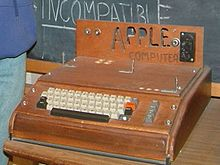
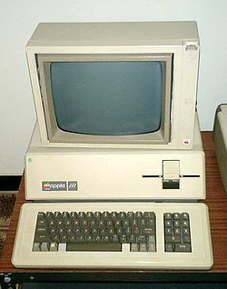
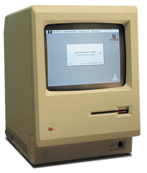

- •1976-1980: FUNDACION E INCORPORACION
- Steve Wozniak y Steve Jobs se conocieron en 1971, cuando un amigo mutuo, Bill Fernández, presentó a Wozniak, quien tenía 21 años de edad, a Jobs, entonces de 15 años. Steve Wozniak.Pronto Wozniak empezó a dedicar cada vez más y más tiempo a construir en papel su propia computadora. Tras intentos relativamente infructuosos en su oficina de trabajo en Hewlett-Packard (sus jefes vieron el proyecto y no estaban interesados y le autorizaron a continuarlo), finalmente sus esfuerzos dieron como resultado lo que sería la Apple I.Jobs rápidamente vio la oportunidad de negocio, por lo que empezó a promover la computadora entre otros aficionados de la informática del Homebrew Computer Club y otras tiendas de electrónica digital.Al poco tiempo empezaron a recibir pequeños encargos de computadoras que construían ellos mismos con máquinas hechas a mano, llegando a vender unos 200 ejemplares de su máquina Apple I.
El 1 de abril de 1976 fue fundada Apple Computer a través de un contrato firmado por sus tres accionistas: Steve Wozniak, Steve Jobs y Ron Wayne
- •EL APPLE II Y EL EXITO
- Con el dinero ganado gracias a la venta del Apple I, en Apple pudo comenzar a pensar en una máquina bastante más ambiciosa: el Apple II. Para Wozniak, el Apple II iba a ser simplemente la computadora que hubiera querido construir si no hubiera tenido las limitaciones económicas que tuvo con el Apple I. Tuvo la idea de incluir en el equipo memoria de vídeo para administrar la visualización en color, del mismo modo que incluía numerosas tarjetas de expansión de modo que los usuarios pudieran ampliar las capacidades de la computadora según sus propias necesidades.Si bien Steve Wozniak era el diseñador de toda la lógica y la electrónica del Apple II, Steve Jobs era el creador del concepto y la visión de futuro de Apple, buscando al mismo tiempo la forma de crear un producto que pudiera satisfacer a todos los usuarios, y no solo a los más técnicos. Aparte de la decisión de vender el Apple II como un conjunto perfectamente empaquetado, otras importantes decisiones suyas fueron la de invertir en mejores sistemas de alimentación eléctrica y control del calentamiento del equipo, siendo el Apple II una computadora completamente silenciosa gracias a que no necesitaba ventiladores para controlar su temperatura.El modelo final de Apple II se presentó al público en abril de 1977 convirtiéndose en el canon de lo que debía ser a partir de entonces una computadora personal. Por este motivo, Apple cambió su logotipo por el famoso logo de la manzana coloreada, que recordaba que el Apple II era uno de las primeras computadoras en disponer de monitor en color.
- •COMPUTADORES POSTERIORES
- Mientras que el Apple II conocía un éxito creciente, Apple ya trabaja en sus sucesores. Lisa debía ser una evolución del Apple II, una máquina de transición antes de Lisa y Macintosh que serían una nueva clase de equipos. Para el sucesor del Apple II, Steve Jobs quería una máquina más avanzada aún para contribuir al mercado de la informática de empresa. La computadora fue presentada finalmente en mayo de 1980 bajo el nombre de Apple III. Desgraciadamente, algunas elecciones técnicas, entre las cuales se encontraba la ausencia de un ventilador, fueron la razón de que muchos equipos se sobrecalentaran Miles de Apple III debieron sustituirse. Algunos meses más tarde, en noviembre de 1981, Apple lanzó una nueva versión del Apple III, que corregía todos los grandes problemas de la versión inicial. Un Apple III+ salió incluso en 1983. Pero los problemas de sus comienzos desalentaron a los compradores y fueron la razón de que el Apple III se convirtiera en el primer gran fracaso comercial de Apple.Pese al fracaso del Apple III, Apple aún tenía dos modelos a desarrollar: Lisa y Macintosh. La gran apuesta de Apple era Lisa, la cual debía convertirse en la nueva generación de computadoras de Apple y con el que se pretendía también atacar el mercado empresarial que se le había negado con el Apple III y que sin embargo estaba siendo abarcado por la IBM PC, mientras que la Macintosh era un proyecto iniciado por Jef Raskin para construir una pequeña computadora muy económica y fácil de usar pensada para el mercado doméstico.
- •1981-1989: ÉXITO CON EL MACINTOSH
- Tras el fracaso del Apple III y el Apple Lisa, la compañía se volcó en el pequeño proyecto de Jef Raskin primero y Steve Jobs después: el Macintosh. Tras numerosos retrasos y problemas, especialmente con el software, el cual no estuvo preparado hasta prácticamente el último momento, y tras la emisión de un destacado anuncio de televisión durante la celebración del Super Bowl de ese año, comercial dirigido por Ridley Scott y considerada el mejor comercial de televisión de la década de 1980 por Advertising Age,21 la computadora fue presentada el 24 de enero de 1984.
Las previsiones de venta iniciales de medio millón de unidades vendidas hasta fin de año parecían que podrían cumplirse durante los primeros meses de 1984, pero poco a poco las ventas se fueron ralentizando, provocando el pánico en Apple.
Entre los muchos motivos que hicieron erosionarse las ventas del Macintosh, se puede destacar el alto precio (2495 USD), la escasa memoria RAM instalada en la computadora (solo 128 KiB), la inclusión de una única unidad de disco, la no inclusión de puertos de expansión y la falta de software, ya que salvo Apple, solo Microsoft acudió a la cita del Mac con productos de software.



